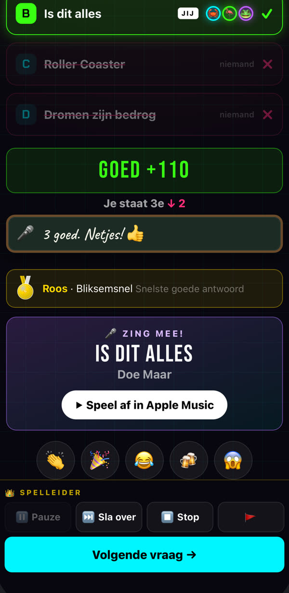
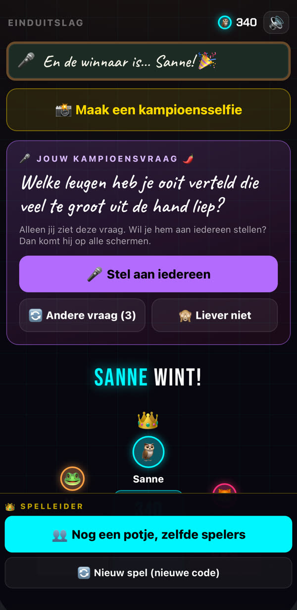

200 meezingers
Raad wie het zong of hoe het nummer heet. Daarna zet je het met de knop "Speel af in Apple Music" meteen op, en zingt de hele tafel mee. Vals mag.

De pubquiz-app voor thuis en in de kroeg
Je iPhone is de quizmaster en jij speelt gewoon mee. Je vrienden scannen een QR-code en doen mee op hun eigen telefoon. Geen app, geen account, geen gedoe.
Zo werkt het
Geen inschrijving, geen gedoe met accounts. Binnen een minuut zit iedereen aan tafel.
Open Kwiz Avond op je iPhone en laat de QR-code zien. Jij bent de quizmaster, en je speelt gewoon mee. Liever alleen presenteren? Kan ook.
Je gasten scannen de code, kiezen een naam en een mascotte of maken een selfie, en spelen mee in de browser. Ze hoeven niks te installeren.
De antwoorden verschijnen één voor één: A… B… C… D… Snel én goed antwoorden levert de meeste punten op. Daarna: de stand, medailles en een kampioen.
Wat erin zit
Behalve het bier. Dat moet je zelf regelen.
Raad wie het zong of hoe het nummer heet. Daarna zet je het met de knop "Speel af in Apple Music" meteen op, en zingt de hele tafel mee. Vals mag.

In acht categorieën, van aardrijkskunde tot eten en drinken. Elke vraag is blind nagekeken voordat hij in de app kwam.
Eén pittige vraag, en jij bepaalt hoeveel punten je inzet. Durf je alles op het spel te zetten?
Maak bij het meedoen een selfie, dan sta je met je eigen hoofd in de stand. Fout antwoord? Dan krijg je een bedroefde snoet. De winnaar krijgt een kampioensselfie, en de hekkensluiter… ook een foto.
Wijze uil, Bliksemsnel, Kampioen: er valt van alles te winnen. De medailles blijven bewaard, dus bij het volgende potje zie je meteen wie de prijzenkast vol heeft.

De winnaar mag iedereen nog één vraag stellen: gezellig of pikant, dat kies jij als host. Geen punten, wel stof tot praten. Te spannend? Dan kies je een andere vraag, of je slaat hem over.
Klappen, juichen, proosten of lachen: iedereen stuurt reacties vanaf de eigen telefoon, en die zweven over het scherm. De hele zaal doet mee.
Te weinig mensen? Zet een paar robots aan tafel, van gokker Robbie tot Professor Bit. Ze tellen niet mee voor het aantal spelers.
Van een avondje met z'n vieren tot een volle verjaardag of bedrijfsuitje. Met Plus of een Avondpas passen er 30 aan tafel.
Alles staat in beeld: de vragen, de antwoorden, de reacties en het gejuich. Fijn in een rumoerige kroeg, en iedereen kan meedoen, ook wie slecht hoort.
Ook op je tv
Heb je een Apple TV? Open daar Kwiz Avond, en het spel verschijnt vanzelf op de tv: de QR-code, de vragen, de stand, het applaus en de kampioensfoto. Je bedient alles gewoon vanaf je iPhone.
Geen Apple TV? Geen probleem. De tv is een extraatje: zonder tv werkt alles ook, op de telefoons.
Prijzen
Alleen de host betaalt. Je gasten spelen altijd gratis mee.
€0
Zonder abonnement
€2,99per maand
of €19,99 per jaar
€4,99eenmalig
24 uur alles van Plus
Aankopen lopen via Apple. Plus verlengt automatisch, tenzij je het minstens 24 uur voor het einde van de periode opzegt in de instellingen van je Apple-account.
Vragen
Ja. De iPhone van de host en de telefoons van de spelers zijn genoeg. Een Apple TV is een leuk extraatje voor het grote scherm, maar niet nodig.
Zeker. Iedereen moet op hetzelfde netwerk zitten. Is er geen wifi die je kunt gebruiken, zet dan op je iPhone de persoonlijke hotspot aan en laat je gasten daarmee verbinden. De Apple TV werkt via een hotspot meestal niet; dan speel je zonder tv.
Telefoon leeg of de browser per ongeluk dichtgeklapt? Geen paniek. De host laat de QR-code zien, je scant hem opnieuw en kiest bij "Wie ben jij?" je eigen naam. Dan speel je verder waar je was.
Gratis met 4 spelers en 10 vragen per spel. Robots tellen daarbij niet mee. Met Plus of een Avondpas kunnen er 30 spelers meedoen, met tot 30 vragen per spel.
Ja. Alles staat in beeld: de vragen, de antwoorden, de stand en de reacties. Geluid is een extraatje, je hebt het niet nodig om mee te doen.
Meer vragen? Kijk op de supportpagina of mail naar info@kwizavond.nl.
Pak je iPhone, roep je vrienden erbij en zet de eerste vraag klaar.